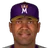
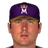
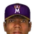

American Baseball League · Depth chart & lineups
Montreal Royeaux
← Team page · Payroll · Transactions
Based on games played and started through May 13, 2002. The OOTP export has no saved depth chart or lineup card, so this is derived from real usage. Lineups and depth chart list only players on the active roster now (26 players).
Most common lineups
For each batting-order spot, the active player who started there most often against that kind of starter (each player used once). Starts in spot = games he started in that spot out of the games against that hand. AVG/OBP/SLG: his season line with this club.
vs. right-handed starters 33 games
| # | Player | Pos | Starts in spot | AVG | OBP | SLG |
|---|---|---|---|---|---|---|
| 1 | 2B | 30 of 33 | .389 | .465 | .550 | |
| 2 | DH | 29 of 33 | .192 | .292 | .295 | |
| 3 | LF | 30 of 33 | .380 | .470 | .683 | |
| 4 | CF | 27 of 33 | .301 | .360 | .479 | |
| 5 | RF | 23 of 33 | .230 | .314 | .385 | |
| 6 |  Eduardo Perez | 1B | 21 of 33 | .277 | .327 | .432 |
| 7 | 3B | 19 of 33 | .318 | .423 | .485 | |
| 8 |  Phil Hiatt | 1B | 11 of 33 | .225 | .303 | .337 |
| 9 | Chris Sexton | SS | 11 of 33 | .286 | .383 | .357 |
vs. left-handed starters 7 games
| # | Player | Pos | Starts in spot | AVG | OBP | SLG |
|---|---|---|---|---|---|---|
| 1 | SS | 6 of 7 | .389 | .465 | .550 | |
| 2 | DH | 5 of 7 | .192 | .292 | .295 | |
| 3 | LF | 6 of 7 | .380 | .470 | .683 | |
| 4 | CF | 6 of 7 | .301 | .360 | .479 | |
| 5 | RF | 3 of 7 | .230 | .314 | .385 | |
| 6 | Eduardo Perez | 1B | 3 of 7 | .277 | .327 | .432 |
| 7 | 3B | 4 of 7 | .318 | .423 | .485 | |
| 8 | Bobby Estalella | C | 3 of 7 | .235 | .318 | .496 |
| 9 | Chris Sexton | SS | 2 of 7 | .286 | .383 | .357 |
Depth chart games started by position through May 13
| Pos | Role | Player | GS at pos | G | AVG | OBP | SLG | HR |
|---|---|---|---|---|---|---|---|---|
| C | Starter | Bobby Estalella | 32 | 32 | .235 | .318 | .496 | 8 |
| Backup 1 | Marcus Jensen | 8 | 9 | .333 | .412 | .433 | 0 | |
| 1B | Starter | Phil Hiatt | 20 | 27 | .225 | .303 | .337 | 1 |
| Backup 1 | Eduardo Perez | 18 | 39 | .277 | .327 | .432 | 5 | |
| Backup 2 | 2 | 10 | .292 | .320 | .417 | 1 | ||
| 2B | Starter | 18 | 37 | .389 | .465 | .550 | 4 | |
| Backup 1 | 12 | 37 | .318 | .423 | .485 | 3 | ||
| Backup 2 | Chris Sexton | 4 | 21 | .286 | .383 | .357 | 0 | |
| Backup 3 | 4 | 10 | .292 | .320 | .417 | 1 | ||
| 3B | Starter | 24 | 37 | .318 | .423 | .485 | 3 | |
| Backup 1 | Eduardo Perez | 12 | 39 | .277 | .327 | .432 | 5 | |
| Backup 2 | Chris Sexton | 2 | 21 | .286 | .383 | .357 | 0 | |
| Backup 3 | 1 | 4 | .250 | .250 | .250 | 0 | ||
| SS | Starter | 18 | 37 | .389 | .465 | .550 | 4 | |
| Backup 1 | Chris Sexton | 14 | 21 | .286 | .383 | .357 | 0 | |
| Backup 2 | 1 | 37 | .318 | .423 | .485 | 3 | ||
| LF | Starter | 30 | 38 | .380 | .470 | .683 | 11 | |
| Backup 1 | Eduardo Perez | 7 | 39 | .277 | .327 | .432 | 5 | |
| Backup 2 | 3 | 38 | .192 | .292 | .295 | 4 | ||
| CF | Starter | 34 | 38 | .301 | .360 | .479 | 5 | |
| Backup 1 | 6 | 38 | .380 | .470 | .683 | 11 | ||
| RF | Starter | 35 | 37 | .230 | .314 | .385 | 6 | |
| Backup 1 | 3 | 38 | .301 | .360 | .479 | 5 | ||
| Backup 2 | Phil Hiatt | 2 | 27 | .225 | .303 | .337 | 1 | |
| DH | Starter | 35 | 38 | .192 | .292 | .295 | 4 | |
| Backup 1 | Phil Hiatt | 2 | 27 | .225 | .303 | .337 | 1 |
Rotation OOTP projected starters (projected_starting_pitchers.csv)
| # | Pitcher | Active | GS | W-L | IP | ERA | WHIP | K |
|---|---|---|---|---|---|---|---|---|
| 1 | Glendon Rusch | Yes | 8 | 2-2 | 49.2 | 5.44 | 1.49 | 40 |
| 2 | Yes | 8 | 5-2 | 52.2 | 4.44 | 1.48 | 50 | |
| 3 | Yes | 8 | 4-3 | 54.1 | 3.81 | 1.18 | 25 | |
| 4 | Paul Wilson | Yes | 7 | 2-4 | 39.1 | 6.64 | 1.88 | 24 |
| 5 | Yes | 9 | 5-2 | 65.2 | 2.47 | 1.14 | 35 |
Bullpen roles from usage: closer = most saves, setup = most holds, long relief = most innings per outing (1.1+ IP)
| Role | Pitcher | Throws | G | SV | HLD | IP | IP/G | ERA | K |
|---|---|---|---|---|---|---|---|---|---|
| Closer | RHP | 14 | 10 | 0 | 15.2 | 1.1 | 4.60 | 18 | |
| Setup | Will Cunnane | RHP | 16 | 2 | 8 | 16.1 | 1.0 | 1.10 | 10 |
| Setup |  Bobby Jones | LHP | 8 | 0 | 2 | 12.1 | 1.5 | 10.95 | 13 |
| Long relief | John Riedling | RHP | 7 | 1 | 0 | 13.1 | 1.9 | 2.02 | 11 |
| Long relief | RHP | 6 | 0 | 0 | 15.0 | 2.5 | 9.00 | 6 | |
| Middle relief | Jose Santiago | RHP | 8 | 0 | 0 | 14.1 | 1.8 | 5.65 | 11 |
| Middle relief | RHP | 7 | 0 | 1 | 8.0 | 1.1 | 2.25 | 8 |
Bench active position players outside the regular lineups
| Player | Pos | G | PA | AVG | OBP | SLG |
|---|---|---|---|---|---|---|
| Marcus Jensen | C | 9 | 34 | .333 | .412 | .433 |
| 1B | 10 | 25 | .292 | .320 | .417 | |
| 2B | 2 | 7 | .143 | .143 | .571 | |
| 3B | 4 | 4 | .250 | .250 | .250 |
Injured list
| Player | Pos | List | Days left |
|---|---|---|---|
| SS | 60-day | 173 |